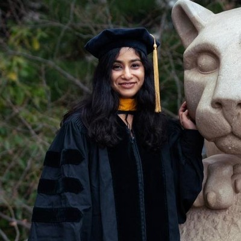

About Me
I (she/her) am a Visiting Assistant Professor at the Massry School of Business at the University at Albany, SUNY. I design and teach courses in AI, data analytics, and AI ethics for the AI for Business program. I earned my Ph.D. in Information Sciences and Technology from Penn State in 2023, where I was advised by John M. Carroll.
I am on the academic job market this year.
Who I Am
I am a Human-Computer Interaction (HCI) researcher with a passion for exploring the connections between technology and society. My research sits at the intersection of HCI, Computer-Supported Cooperative Work (CSCW), and Intelligent User Interfaces (IUI). I focus on community and health informatics: how communities that are navigating uncertainty or strain, such as volunteer water-monitoring groups, Indigenous nations, and families facing medical crisis, collaborate, communicate, and increasingly rely on AI. I use qualitative and participatory methods, including interviews, observation, participatory design, scenario-based design, and focus groups, to design and evaluate those systems directly with the people who use them. You can read more on my research page.
My work is driven by a commitment to creating technology that not only solves problems but also enriches lives and fosters a more connected and informed society. I believe community agency is not inevitable, even though AI increasingly is, so I study how to build systems that strengthen local knowledge rather than displace it.
I have 14 peer-reviewed journal and conference papers in venues including ACM CSCW, IUI, and DGO, and I have mentored nine students, from undergraduates to Ph.D. candidates. I also care a great deal about teaching; see my teaching page.
Contacting Me
Email is the best way to reach me: sgupta4@albany.edu. I am glad to hear from:
- Search committees and hiring managers. Please include the position title and any materials you need from me. I am happy to share my research and teaching statements and the contact information for my references.
- Fellow researchers. I welcome conversations and collaborations on community-centered AI, citizen science and environmental monitoring, Indigenous data sovereignty, and public health informatics. A short note about what you are working on is a great place to start.
- Students. I am glad to hear from students interested in HCI, human-centered AI, or the courses I teach. Please tell me a little about your background and what you hope to explore.
Curriculum Vitae
Here it is. A short version is on my CV page.